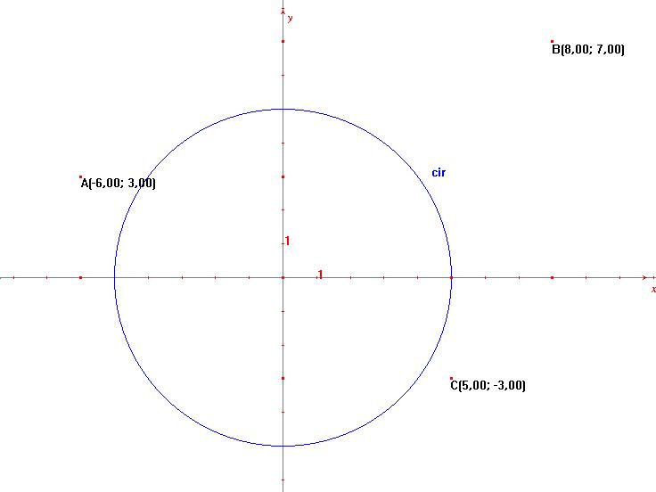

Problema 82:
Problema de Castillon
| Dada una circunferencia T y tres puntos A,B,C, construir con regla y compás un triángulo MNP inscrito en T cuyos lados respectivamente pasen por A, B C. |
Carrega, JC.Théorie des corps, la règle et le compas, Edition
Hermann, 1989 (pag 98)
formation des enseignants et formation continue
Para fijar la situación, sea:
